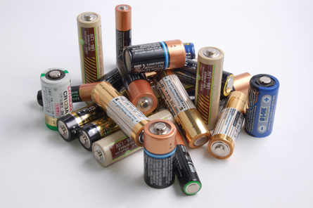

© Adam Majchrzak/shutterstock
When you look at this picture, do you see many different kinds of batteries or do you see many different shapes of the same chemical system? Your answer might indicate whether you view batteries from a technological perspective or from a scientific perspective.
In this module you will extend and apply your understanding of electrochemical change to understanding the design and function of a variety of types of electrochemical cells, one of which is the electric cell—the technology used in batteries and in other applications.
You will use the skills and techniques you have been developing to analyze and predict change in electrochemical systems. You will do this within the context of electric and electrolytic cells. You will also investigate the technological aspects of, and your reliance on, these chemical systems.
As you investigate the electrochemical cells introduced in this module, you will see how chemical knowledge about reduction-oxidation reactions is applied to solving problems and expanding capabilities. You will consider the purpose and impact of different types of electrochemical cells.
In Module 4 you will investigate the following question:
Remember that each lesson will also be organized around questions intended to guide your study. As you proceed through Module 4, you may record answers to these questions and any interrelationships that exist between them in a concept map or graphic organizer. More information is available in the Unit B Concept Organizer. In the Module 4 Summary you will receive further information on how you can use your concept map or graphic organizer to review the concepts you studied in this module.